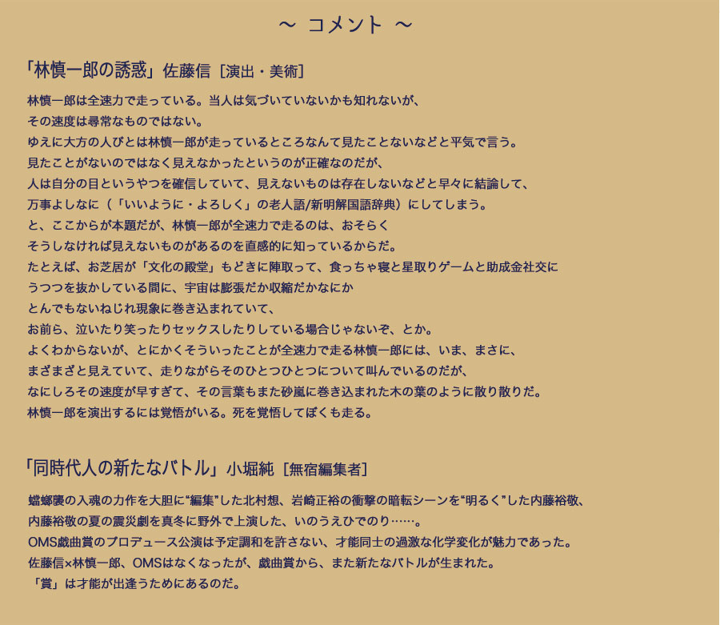

コインパーキング（＝タイムズ）という都市にある宙づりの場所と動かない時間をモチーフに、
この世界に在る風景を、様々な物語の断片と共に描く本作は、
作者の脳内にあるエキスを自動書記が如くスピード感ある台詞と予期せぬ場面展開で抽出した異色作。
自動車ショーの司会者や女性棋士、小林旭やプロ野球・横浜大洋ホエールズのポンセにスーパーカートリオらの登場人物達の
奇想天外な行動が、ゲームセンターやコインパーキングなどの場所という記号に絡み合う。
軽い躁状態の現代世界をコラージュし、狂騒の中で繰り広げられる人間の哀しみが舞台を見る者の五感を刺激していく。
林が創り出した幻想が、世界を社会を、そして我々を解き放つ。
（安藤善隆 『言葉の劇場』OMS戯曲賞20年記念誌より )
作 / 林 慎一郎 演出・美術 / 佐藤 信 振付 / 原 和代

◎OMS戯曲賞
扇町ミュージアムスクエア10周年記念事業の一環として1994年に創設。
時代を担う新たな創作家の発掘と同時に、既に評価のある中堅創作家への刺激も兼ねて
過去に受賞歴のある作家も選考の対象にした、関西発信の戯曲賞。
かつては劇場プロデュースによる上演があり、現在は再演助成を行うなど受賞作の再演を支援している。
（主催：大阪ガス株式会社 運営：大阪ガスビジネスクリエイト株式会社）
2013年「タイムズ」公演の特設サイトで創作過程のぞけます。click!
戯曲も読めます！！click
＜東京公演＞
場所
座・高円寺１
〒166-0002 東京都杉並区高円寺北2-1-2
TEL 03-3223-7500
JR高円寺駅 北口徒歩５分
＊土日・祝日の中央線快速は高円寺駅に停車しませんのでご注意ください。
＊駐車場はございませんので、お越しの際は公共交通機関をご利用ください。
主催：極東退屈道場 後援：杉並区
提携：NPO法人劇場創造ネットワーク/ 座・高円寺
開演日時
2015年4月17日（金）〜19日（日）
4/17 19:30
4/18 14:00
4/19 14:00
※受付開始・開場は開演の30分前。
料金
前売：3200円、当日：3200円、ペア：5500円
ユース割引：(22歳以下)2000円、高校生以下：1500円
以下のサービスは劇場で承ります。
お申込・お問い合せは座・高円寺チケットボックス℡03-3223-7300まで。
＊車椅子スペースをご利用の方は、前日までにお申し込みください（定員あり）。
＊障がい者手帳をお持ちの方は、座・高円寺チケットボックスでのご予約に限り１割引きになります。
＊託児サービス（定員あり・対象年齢1歳～未就学児・１週間前までに要予約）料金：1000円。
＜関西公演＞
場所
アイホール（伊丹市立演劇ホール）
〒664-0846 兵庫県伊丹市伊丹2丁目4番1号
TEL 072-782-2000
JR伊丹駅西側 徒歩1分
主催：極東退屈道場 共催：アイホール
開演日時
2015年4月24日（金）〜26日（日）
4/24 19:30
4/25 14:00 / 18:00
4/26 14:00
※ 受付開始・開場は開演の30分前。
※ 未就学児童の御入場はご遠慮いただいております。
料金
前売：3200円、当日：3500円、ペア：5500円
ユース割引：(22歳以下)2000円、高校生以下：1500円
◎協力 南河内万歳一座,OMS戯曲賞事務局,ストローハウス
石川隆三,カフェ＋ギャラリーcan tutku,キューカンバー
◎助成 大阪ガス株式会社
<キャスト>

あらいらあ

石橋和也

井尻智絵

小笠原聡

後藤七重

猿渡美穂

中元志保

船戸香里
<スタッフ>
振 付：原和代
共同演出：林慎一郎
照 明：齋藤茂男
音 響：金子進一。（T＆Crew）
舞台監督：塚本修（CQ）
宣伝美術・舞台写真：清水俊洋
制 作：尾崎雅久（尾崎商店）、HIPSTER
☆チケット発売開始 2014/12/11(木)☆
極東退屈道場（東京公演/関西公演）
tel&fax 06-6841-3432(ハヤシ)
e-mail ticket@taikutsu.info
東京公演 <座 · 高円寺>
＊座・高円寺の劇場回数券「なみちけ」もご利用いただけます。
「なみちけ」とは、４枚綴りのチケット引換回数券です。座・高円寺で上演する主催・提携公演であれば、
お一人１枚１ステージにご利用になれます。
ひとつの公演に何回足を運んでも、お友達と一緒に使ってもＯＫ。
一般用12,000円／1シート（3,000円×4枚）、学生及びシルバー用10,000円／1シート（2,500円×4枚）です。
詳細は座・高円寺チケットボックスまで。
関西公演 <アイホール>